I 90'erne begyndte et firma ved navn Netscape at udvikle SSL (Secure Socket Layer)[1]. Kort sagt, en måde man sikkert kan sende information over internettet på uden at det kan læses af 3. parter. I 1999 blev TLS (Transport layer security) udviklet af Internet Enigneering Task Force (IEFT) som en forbedring på SSL v3.0[1]. Men for at kunne bruge https på sin hjemmeside kræver det at man har en certificering, for at få certificeret sin hjemmeside kræver det at der er en CA (Certificate Authority). Det er en 3. part som giver certificeringer ud hvis man kan bevise man har kontrol over domænet
Hvordan får man Certificering på sin hjemmeside
For at få certificering af sin hjemmeside skal man bevise overfor en CA at man har kontrol over domænet. Når man har bevist det, så får man udsendt en certificering. Herefter når brugere tilgår ens hjemmeside kan de bruge https
Kilder
https://www.keyfactor.com/blog/what-is-ssl/
https://letsencrypt.org/how-it-works/
Projekt styrings indlæg
28/04/22
Tids estimerings teknikker
For at finde ud af hvor lang tid et projekt tager, bliver man nød til at tids estimere det. Det er vigtigt fordi kunden gerne vil vide, hvor lang tid deres projekt tager så de kan regne et budget ud. Der er flere forskellige methoder at estimere den tid det vil tage at lave et projekt på, jeg vil gå igennem et par af dem
Hvad gør man først
Før man begynder at kunne tidsestimere ens projekt er det et par ting man bliver nød til at have på plads. Første trin er at finde ud af hvad kunden vil have, det vi gjorde i vores projekt, var at holde en workshop. Den workshop gik ud på at høre alle kravene for hvad kunden tænkte, derefter stillede vi spørgsmål for at få specificeret alle krav evt fjernet krav eller tilføje andre krav. Efter workshoppen hvor alle krav er fundet, så begynder man at skære dem yderligere ned. På den måde finder man ud af hvilke krav der skal være der til version 1 af produktet. Når man har fundet minimums kravene til projektet, så skal man lave en risiko vurdering. Det gør også at man bedre kan tids estimere senere. Efter man har fundet kravene, fået dem delt op og fundet de vigtiste og lavet en risiko vurdering. Så er man klar til at tidsestimere kravene.
Expert mening
En måde man kan estiemre på er en expert mening. Man kan selv have en expert, en gruppe af experter eller få en udefra til at vurdere.
3 punkts estimering
En meget simpel metode er at lave 3 estimater, et optimistisk, et pessimistisk og et realistisk bud. Så ganger man det realistiske bud med 4, plusser optimistisk og det pessimistiske på, og dividere med 6. Så får man et bud som burde være meget godt. En af de dårlige ting ved den her metode er, at det kan tage lidt tid at komme op med 3 forskellige estimeringer. Hvis man har mange små opgaver som skal estimeres kan det være fordelsagtigt at benytte sig af en anden metode, som passer bedre til det.
Sammenligenigs estimering
En anden rigtig god måde at estimere på, er at sammenligne med tidligere projekter som ligender. Selvom der ofte er andre koncepter i apps, så er mange af del komponeterne i en app ens. Fx en chat, eller CRUD funktioner, så kan der godt være ekstra ting til en chat som fx gruppe chat eller ligende. Så er basis funktioner ens. Man skal kunne skrive og modtage beskeder.
Kilder
Blog indlæg 4
Projekt styring
01/04/22
Hvordan har vi lavet projekt styring til rento
Det første vi begyndte på var at lave en risikovurdering for projektet. Den kom desværre hurtigt i brug, idet vi mistede to medlemmer inden projektet gik i gang. Vores plan for at miste et medlem var at snakke med Alan, det gjorde vi. Og fik hurtigt to nye medlemmer, så vi igen var en gruppe på fire medlemmer. Herefter fik vi lavet vejledningsplan, så vi havde styr på hvornår hvert team medlem i gruppen skulle til guild, produkt og process møder. Herefter fik vi lavet en produktbeskrivelse, så vi havde en klar definition på hvad produktet var. Hvert medlem har 2 emner, dem lavede vi også en beskrivelse for hvordan de skulle passe ind i projektet. Ellers måtte vi finde på et lille sideprojekt som kunne laves til at fremvise hvad man har lært.
Den næste store opgave var at få styr på domænet, her lavede vi en workshop med vores PO. Den gik ud på at få spurgt ind til alle krav vores app Rento skulle have. Efter at have fået styr på alle krav til Rento, gik vi igang med at dele opgaver op så de ikke var Epics.
Firmaet vi arbejder sammen med, littlegiants, bruger clickup som deres projektstyrings værktøj. Derfor gik vi igang med at lave en kæmpe backlog. Hvor vi skrev user stories og et issue til frontend og backend. Efter at have fået skrevet issues til alle krav, begyndte vi at tidsestimere alle issues. Vi havde lidt over 100+ issues med en smalet tidsestimering på ca 450 timer.
I forholdt til tidligere projekter vi har lavet i skolen, har vi ikke gået op i at lave en lige så grundig kravindsamling og tidsestimering af alle issues. Ofte ved tidligere projekter har vi haft en overordnede manglende kravindsamling. Og som projketet er skrevet fremad har vi tilføjet nye features når vi lige følte for det. Det har givet en meget uklar vision af det endelig produkt, og tit periode hvor man måske ikke fik lavet så meget fordi man var i tvivl om hvad man lige skulle gå igang med.
Kigger vi så på vores projekt Rento, så har vi en klar vision af hvad der skal laves i projektet for at opnå vores minimum viable product (MVP). Efter 2 måneder havde vi lavet mange basis opsætning på projektet og var kommet godt ind i det. Tilsammen var vi nået 33%, og følte at vi var klar til at have ugentlige updateringer med PO. Agendaen på de møder var at holde PO opdateret på projektet og fortælle hvor langt vi var kommet. Fordi vi havde lavet tidsestimeringer på projektet var det muligt for clickup at lave en udregning på hvor langt vi var. Derfra fik vi nemlig de 33%. Det fik vi meget positiv feedback på fra PO, og det var kun muligt fordi vi havde lavet tidsestimeringer. Udover at opdatere PO med fremgangen af projektet var andet punkt på vores agenda at stille spørgsmål, hvis vi er blevet i tvivl om noget angående kravene eller ligende.
Selvom vi har lavet mange af projektstyrings opgaver som kravindsamling, lave user stories og issues, så har vi virklig gået i dybden med de opgaver den her gang. Det synes jeg har gjort den helt store forskel i forholdt til vores tidligere projekter. En anden stor gamechanger som vi ikke har gjort brug af før, er tidsestimering. At tilføje tidsestimering på ens issues får en til at tænke over hvor lang tid det vil tage de forskellige issues at lave. Derudover vil kunder også rigtig gerne have at vide hvor lang tid en app tager at lave, idet de skal betale for den. Så at lære at tidsestimere er en værdifuld evene at have når man skal programmere.
Hvilken hashing algoritme skal man vælge, og hvordan skifter man?
Når man kigger på password hashing så er der mange at vælge imellem, jeg snakkede i sidste it sikkerheds indlæg at sha256 ikke skal bruges til password hashing fordi det er en hurtig algoritme. Jeg nævnte også at bcrypt var gammel og scrypt ville være den nye. Fra 2013-2015 er der blevet afholdt en password hashing competition. Det blev gjort fordi der ikke var en standard lavet for hashing af passwords. Selvom bcrypt er den mest almindelige brugt som password hashing så har den stadig en svaghed overfor FPGA (Field Programmable Gate Arrays) kort sagt. Hackaday[1] har lavet en "quad fpga board". De har så lavet en lille server med 18 boards, altså 72 fpgas, de kunne i alt lave 2.1 millioner bcrypt hashes/sek. Og det brugte kun 585 watts. Hvis man skulle have samme præstation fra de bedste grafikkort idag (RTX-2080TI) så skulle man bruge 75 kort som i alt ville bruge 25 kilowatt. Det betyder det er super kost effektivt at bruge fpga til samme arbejde. Derudover ville 75 af de grafikkort også fulde en hel del mere.
Hvem vandt så den password hashing competition? det gjorde en Argon2[2]. Argon2 har nogle forskellige varianter
Argon2i
Argon2d
Argon2id
Jeg vil kort lige gå over hvad de forskellige er
Argon2i
argon2i bruger data uafhængigs hukommelse, som er forstrukket for password hashing
Argon2d
argon2d bruger data afhængigheds hukommelse hvilket gør den stærk mod GPU angreb, men er svag overfor side-channel timing angreb
Argon2id
argon2id er en hybrid mellem de to, den er både stærk mod side-channel timing angreb men også stræk imod GPU angreb
argon2id er derfor rigtig god til password hashing da det er en kombination af dem begge. Derudover anbefaler OWASP også at man bruger argon2id til alle nyere applikationer. I tilfælde af man bruge ældre systemer som ikke kan bruge argon2id, så er bcrypt okay
Hvordan skifter password hashing algoritme på en produktions database?
Hvis man har en databasen som er i produktion, hvordan skifter man så lige over uden at det irritere ens brugere. Jeg kom på 2 muligheder, man kan tage alle ens hashed passwords i databasen og hash dem med argon2id. Det fandt jeg så hurtigt ud af var en dårlig ide, Anthony Ferrara har skrevet et blog om[3] en kæmpe sikkerheds fejl som det kan indebære at kombinere sha256 og bcrypt. Kort sagt, så skærer bcrypt noget af hashet fra hvis den finder en null-byte som kommer fra sha256, det resultere i at ens hashet password bliver væsenligt kortere og dermed bliver det nemmere at finde et andet hash som kan kollidrer med ens password. Selvom vi snakker om bcrypt til argon2id her, så ved man ikke hivlke svagheder det kan indebærer. Derfor råder han en til at man helst bruger en enkelt hashing algroritme og ikke kombinere dem
Den anden mulighed jeg kom på var at når en bruger logger ind, så verificere man det input med det bcrypt hash som ligger i databasen, derefter så hasher man det med argon2id og lægger det ned i databasen i stedet for. På den måde har man bytte hashet ud med argon2id, og bruger har ikke skulle gøre noget ekstra, så næste gang de logger ind, så bliver de verificeret med argon2id i stedet for.
Det vil så kræve at man i en period har både bcrypt og argon2id hash i sin database, det kræver at alle logger ind ellers vil deres password aldrig blive hashet om. Det er der desværre ikke rigtig nogen måde at komme uden om på. Det man kan vælge at gøre, er at efter et valgt stykke tid, fx 1 år, så kan man sende en mail til de brugere som stadig har brcrypt hashet passwords at de gerne må logge ind for nærmeste fremtid, ellers får de en mail om at lave et nyt password. Det nye password vil så selvfølgelig blive hashet med argon2id. På den måde får man en rolig overgang til argon2id uden at det påvirker særlig mange brugere
Proof of concept
Jeg har derfor lavet et lille proof of concept program som viser at man får skiftet hashing algoritme uden at man mærker forskel i login. Den kan hentes på min github.
Uddseenet på webside er den ene side hvor man laver sin bruger, som den hasher med bcrypt. Herefter er der et dialog vindue, den fortæller hvad der sker inden bagved når man trykker på de to knapper. Til højre har vi login ind siden. På første billede har jeg oprettet en bruger med brugernavnet "test" og kodeordet "test". Når jeg trykker på login, har jeg lavet et sted under "opret" knappen som viser ens username og password som er hashet til bcrypt
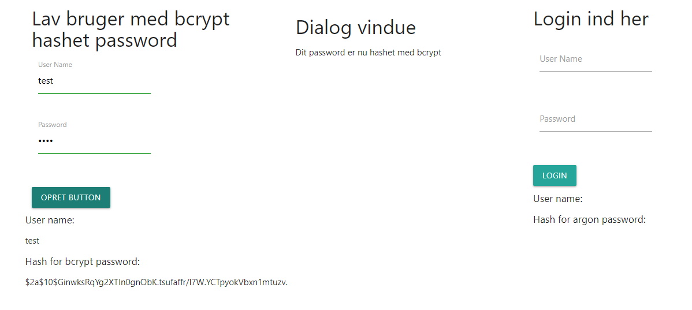
På næste billede logger jeg ind, i dialog vinduet fortæller den at den har verificeret mit password med bcrypt, da det var brcrypt hash som lå i databasen. Herefter fortæller den at mit password nu er hashet med argon2id, og det hash er blevet lagt i databasen.
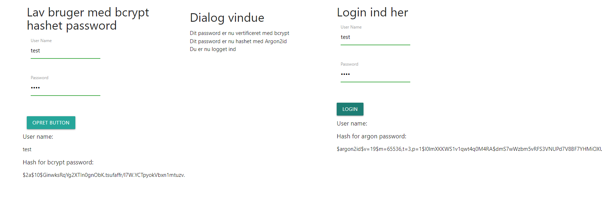
På sidste billede her trykker jeg på login endnu engang. Her fortæller den at mit password er blevet verificeret med argon2id, og vi er nu logget ind.
Alt det sker i baggrunden, og kunden vil ikke blive påvirket af vores ændering ved at skifte hashing algoritme.
Indtil videre på min uddannelse har jeg kun arbejdet i små teams, hvor for har brugt scrum/kanban.
Her vil jeg gerne se på "scaled agilt framework" som hedder SAFe.
Kort sagt, det SAFe prøver på er at gøre det muligt at lave agilt arbejde på kæmpe projekter. Det betyder så også at det ikke vil passe godt til små/få teams, vi snakker nemlig
100+ mennesker til et projekt
Nogle af de helt store fordele ved Safe
Det er nemmere for virksomheden at få et overblik over hele projektet
Det giver et gennemskueligt overblik over arbejdsflowet og kan dermed øge produktiviteten
Gør at folk i teams tager mange af beslutningerne, uden at man skal have managerer til forvirre og gøre processen langsommere
Lægger op til man skal lave PI (Porgram Increments)
Det er alt mange fine ord, men hvad betyder det helt præcist?
Først lad os se på hvordan man kan bruge SAFe, er findes 3 forskellige konfigurationer og 1 som er alle 3 kombineret
Essential SAFe
Large Solution SAFe
Porfolio SAFe
Full SAFe
Essential SAFe
essential SAFe er den mest basis version af SAFe, den kræver mindst muligt roller, begivenheder og artifakter for at succefuldt skalere med SAFe.
Det vigtigste element i essential SAFe er kaldt "Agile Release Train", og kort for ART. Et ART formål referere til agile teams som sammen med nogle stakeholders laver
en PI, udvikler og udgiver løsninger til det endelig produkt sammen.
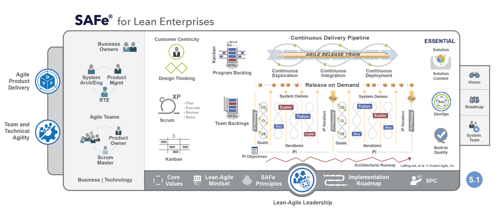
Et ART består typisk af 50-125 folk som kan arbejde sammen på tværs af hinanden, det består af ca 5-12 agile teams. Hvert team består af 5-11 personer.
Grunden til den størrelse på et ART er så stor, er fordi den indeholde folk som kan alt som ses på billedet herunder.
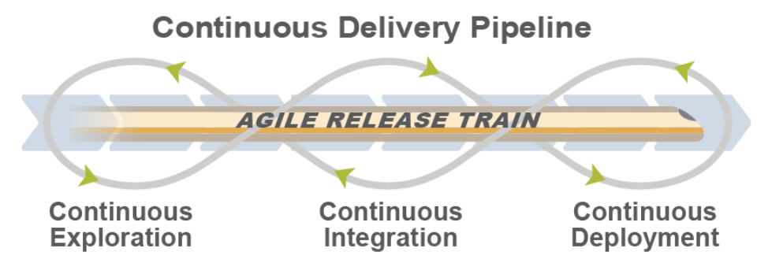
Hvert team i et ART har medlemmer nok til at klare alle kernefunktioner som kræves for at lave et kvalitets produkt. Fordi SAFe er et overordnet værktøj til at skalere agilt så
tager de stadig andre gode agile værktøjer i brug til individuelle teams. Hvert team på selv vælge hvordan de vil arbejde, de primære er scrum, Kanban og Extreme programming. Men det
er op til hvert team hvad der giver mest mening at bruge. Hvert team har også to special roller, nemlig en scrum master og Product Owner
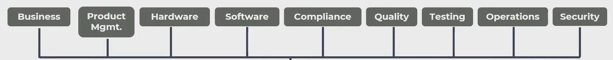
Release Train Engineer
Hvert ART har nogle kritiske roller som skal være i hvert ART. Vi har først en "Release Train Engineer" han vil stå for at styre retningen af hele ART og hjælper med at facilitere
events og processer. Han vil også assistere teams så de fortsat leverer et produkt i høj kvaliet. Det er også hans job at varetage en kontakt med med stakeholders så han sikre vi altid
er på rette vej.
Produkt managment
En produkt manager er primært ansvarlig for at definere og undersøtte produktet man er igang med at bygge. Han sammerabejder med et stor antal folk for at identificere og definere en kundes behov
Herudover står han også for at videre udvikle visionen for produktet og en roadmap så alle har en klar forståelse for hvilken retningen produktet har. De folk som de arbejder sammen med
for at løse deres opgave er typisk kunder, andre produkt managers, produkt ownere, andre ARTs osv for at forstå de forskellige folks behov og løse problemer.
System Architect/Engineer
En System Architect/Engineer er ansvarlig for at, definere og kommunikere den overordnet arkitektur af systemet for et ART. Så de sikre sig at den del af systemet udvikler sig som forventet
og vil passe ind sammen med resten af systemets arkitektur. Han er også med til at analysere primære komponenter i et system og finder ud af hvilke systemer der skal bruges.
Han står også for at lære snitfladerne for hvordan systemer skal kommunikere med hinanden.
Business Owners
En Business owner er en nøgle stakeholder og har ansvaret for at forretnings delen af et ARTs. De står til ansvar for at et ARTs levere værdi til det værdie produkt
Customers
Kunder er vigtige for at sikre man skaber noget værdi for dem, da de er primære brugere af systemet
System Teams
Det er hold som assistere i at bygge og vedligeholde udviklingen, integere nye funktioner og teste udviklingsmiljø og programmet
Shared Services
Sharded Services består af specialister som It-sikkerheds experter, informations arkitekter, database administratere osv. De er nødvendige for at et ART kan fungere.
De kan dog ikke dedikeres til et bestemt ART, derfor kan de hoppe imellem dem alt efter hvor der er brug for deres assistance.
PI (Program Increment)
Hvis vi kigger på PI som er en af de andre fordele ved SAFe. En PI er en timebox hvor et ARTs leverer inkremental værdi til det overordnede produkt i form af software som er testet grundigt og
virker som det skal.
En PI Timebox varer mellem 8-12 uger, en PI indehole 4 udviklings iterationer og 1 innovations og planlægnings iteration. Et PI starter altid med et møde hvor alle teams i ART og
de kritiske roller nævnt overover mødes og diskutere med ledere og managere hvilken retning og forhindringer der er forude. Efter mødet skal man have produceret nye opgaver som skal løses,
deadlines for nye features, relevante milepæle og hvilke opgaver har afhængigheder
Efter hvert PI vil hvert agilt team begynde deres første iteration planlægning. Ligesom scrum, varer hver iteration 2 uger men kan gå op til 4 uger alt efter de individuelle teams behov.
Så hver iteration starter med en planlægnings fase, herfter udfører de arbejdet. Til sidst i en iteration holder hvert team et review og et retrospektive møde hvor de
ser på hvordan iterationen er gået. Herudover på hvordan det er gået, og rafinere deres product backlog.
Idet der er mange teams i et ART bliver der lavet et system demo i slutningen af hver iteration, her vises alle nye features som projektet har fået over sidste iteration.
Det giver ART stakeholders en mulighed for at se hvor langt er nået i en iteration og få en fornemmelse af projektet i sin helhed. Herudover vil der i slutningen af hvert PI blive lavet noget
somer kaldt "Inspect and adapt" her vil alle ART stakeholders kunne se alle de features som er lave over alle iterationer. De ser programmets udvikling og på hvilke ting de gerne vil have
forbedret eller er gode. På den måde får de også forbedret PI backlog så næste PI planning event har bedre formuleret backlog opgaver
Scrum of scrums
Release Train Engineer holder ca 1 gang om ugen en "scrum of scrums". Det scrum of scrums gør, er at hjælpe forskellige agile teams med sammerabejde på komplekse opgaver som kræver
stor koordination mellem teams. Scrum of scrums er Timeboxed til 30-60 minutter, med et møde efterfølgende hvor dem som har mere at diskutere kan det
Vi har også et andet event som hedder produkt owner synkronisering, her snakker produkt ownere og produkt managment med hinanden om deres ARTs retning og om det overordnede projekt kører i den rigtige retning. Sommetider vil man kombinere
scrum of scrums og produkt owner synkronisering til et event. Som kaldes for "agile release train sync"
Til at starte med nævnte jeg at en "PI indehole 4 udviklings iterationer og 1 innovations og planlægnings iteration". Men hvad er så innovations og planlægnings iteration. Kort sagt så indeholder den tid til innovation, mere uddannelse/kurser, PI planning og andre events
Essential SAFe opsummeret
Kort sagt, så er essential safe, hvis man har en virksomhed på omkring 50-125 personer og har brug for at kunne styrer flere teams på engang uden at miste overblikket. Det vil sige at det består af et enkelt ART til hele projektet. Men hvis man er flere folk så man skal bruge to ART, så man kigge på Large Solution SAFe som jeg vil gennemgå nu her.
Large Solution SAFe
Hvis vi starter med at se på hvad en "Solution" er, så betyder det et produkt, service eller et system som bruges internt eller leveres externt til en kunde
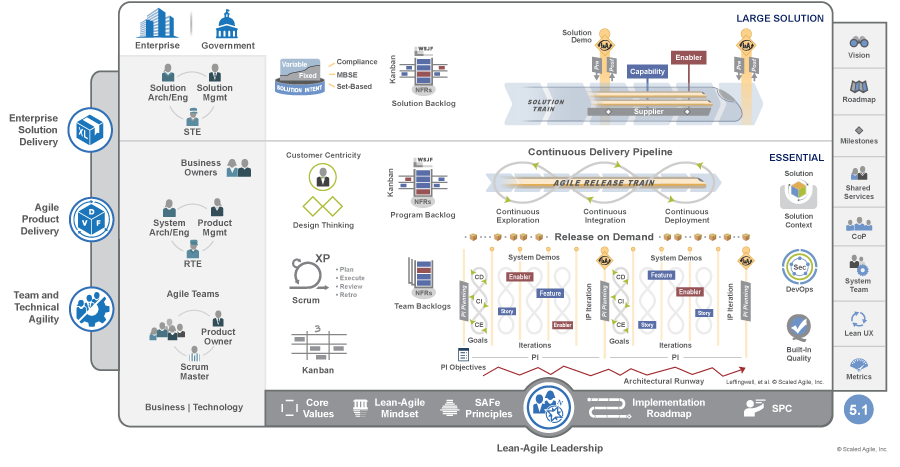
Ligesom billedet fra Essential SAFe, så er Large Solution SAFe det sammen, med en overbygning som ses på billedet her. Et af de nye koncepter er et "Solution Train", helt grundlagt så indeholder det flere Agile Release trains. Det bruges når man arbejder på kæmpe projekt som også er meget komplekst. Her bruges så solution train til at holde alle ARTs på samme kurs og sikre at de alle kører mod samme mål. Det vil også sige at alle ARTs følger sammen Program increment. Så alle stopper og starter på samme tidspunkt. Derudover indeholder det også suppliers, de er en intern eller extern som lever subsystemer eller services for at hele solution train kan nå sit mål, i følge SAFe kaldes de også for en "long-term Business partner".
Ligesom et ART har en Program backlog, så har vi også en overordnede backlog for hele solution toget. Ved Solution PI er det så her alle opgaver bliver delt ud fra solution backlog til de enklte ARTs backlog. Her har vi to "stories", den ene er user story som er meget velkendt. Den anden er en enabler story, en enabler story går ud på at give ekstra information til en user story. Enabler stories bruges også til at se alt arbejde som bliver nød til at ske forinden en user story kan laves. Primært bruges enabler stories til at udforske nye områder, udvikle arkitekturen eller forbedre infrastrukturen.
Derudover har vi også nogle ekstra roller, som er
Solution Architect/Engineer
Solution managment
De ekstra roller står for at have overblikket over hele solution trainet, og sammerabejder med med ARTs Architect/Engineers og management for at få alle til at arbejde sammen. Et par af events går også igen på solution niveau, fx pre og post PI planning. Så events hvor man forbereder og følger op på PI til ARTs og suppliers i et solution train. Vi har også en demo, men her er det en solution demo. Så alle ARTs opgaver bliver vist i et projekt sammen. Vi har også et Inspect and adapt på solution niveau. Her vises det nuværende stadie som er opnået over alle ARTs, så det kan evalueres
Kort sagt, så er Large Solution SAFe meget ens til Essential SAFe. Her er der et niveau ovenpå som kan styrer alle ARTs og have et størrer overblik over hele projektet
Portfolio SAFe
Portfolio SAFe bruger noget som hedder "value streams", der er to slags value streams, en "operational value stream" er beskrevet som en sekvens af aktiviteter der forvandler en forretnings hypotese. Det kunne være, fremstilling af produkter, oprette ordre eller levere en service. Portfolio SAFe bruger, "development value streams" som er en sekvens af aktiviter som bruges til at udvikle og understøtte det produkt som en operational value stream giver.
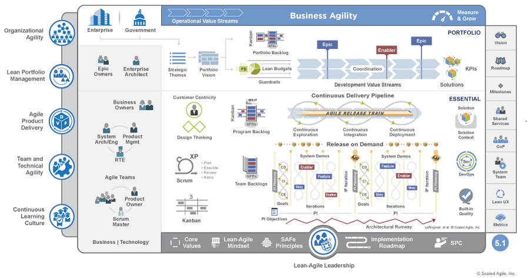
Portfolio SAFe handler om at forstå hvordan ens flow er i virksomheden. I stedet for at se projektet som en helhed, så deler man det op i mindre dele som vist på billedet under. På den måde kan man se hvilken del af processen som er langsom eller dyr. Efter man har fundet ens flaskehals i processen kan man så eliminere den eller gør den så lille som mulig. Dermed øger man produktiviten, sparer penge og får produkter hurtigere ud af døren.
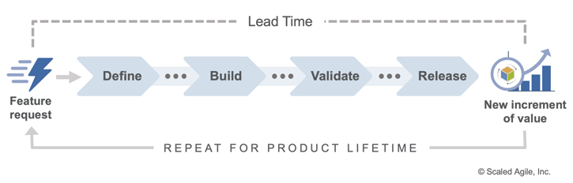
Hvis man ser på skemaet under her, så forklarer de lean budget som at man skal investere i value streams ikke i et projekt. Ved at gøre det, giver man de rigtige dele af ens value stream de resourcer de har brug for så den del ikke bliver flaksehalsen.
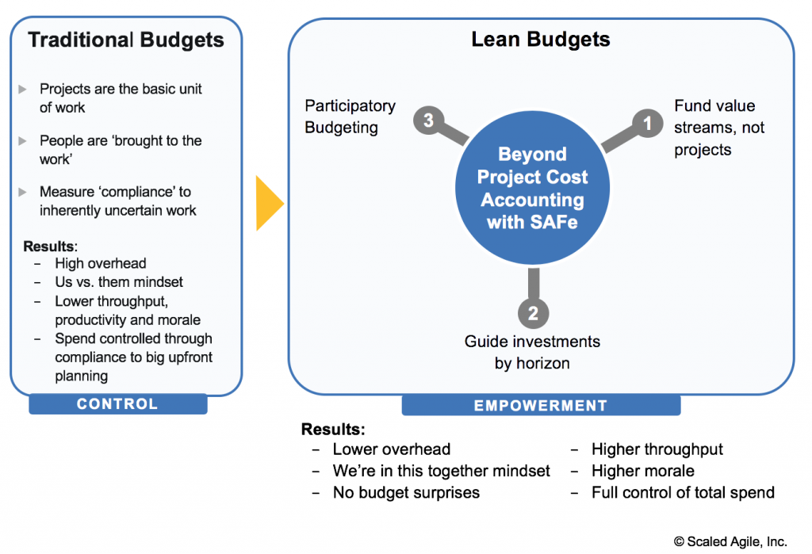
Punkt to siger at man skal investere efter horizonten, det betyder at man skal se på hele ens produkts levetid. Billedet her under illustere de forskelige horizonter.
Horizont 3 starter man med at undersøge nye produkter ud fra en epic. Når man har fundet potentielle løsninger skal investering også øges da de skal have projektet op og køre. I tilfælde af man finder ud af det ikke bliver til noget skal man også afgive en del til at stoppe processen. Horizont 1 er når man har fået et godt produkt, det kræver en større investering da produktet skal i produktion og evt have forbedringer.
Sidste fase er når produktet har haft sin levetid og må stoppes, det kræver også en mindre investering. Men det vil også løsne op i budgettet til nye projekter.
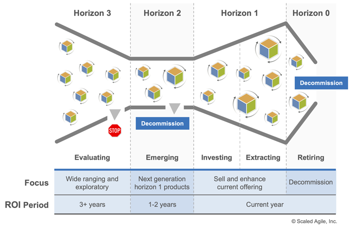
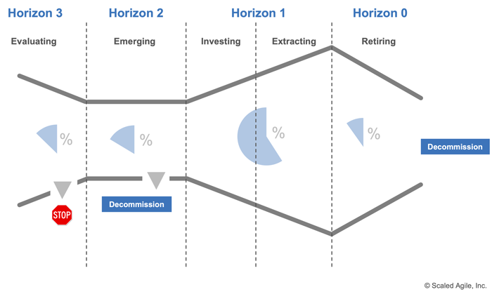
Sidste punkt betyder deltagelsesbaseret budgetering, så portfolio stakeholders og virksomheds lederen. Det vil sige at alle får en fælles forståelse for hvorfor values streams får den investering de har brug for.
Full SAFe
Der er noget ekstra til full SAFe, der inkorpere essential SAFe, large solution SAFe og portfolio SAFe. Det er til de største projekter som også kræver budgetering.
Jeg kan ikke bruge SAFe frameworket i praksis. Men hvis man kigger overordnet på det, så virker det til at fungere for mange firmaer. En ting jeg synes de gør godt, er at de prøver ikke at opfinde deres egne agile metoder, men de bruger andre agile metoder som scrum og lean som fungerer. Det de har fundet ud af at skalere med dem som grundsten. Hvis man ser på deres kerne, så er det små teams som bruger scrum/kanban til at arbejde. Altså noget vi allerede kender til, de bygger så alt infrastrukturen uden om dem med deres Agile release train så man kan arbejde mange teams sammen om et projekt.
Når man snakker om passwords, så skal de idag helst ikke gemmes som plaintekst. Hvis en hacker får adgang til ens database med passwords, så kan han ikke direkte tilgå brugers
kontorer da han ikke kan logge ind, hvis alle passwords er blevet hashet.
Kigger vi på nogle hashing algoritmer, så har vi sha256, problemet med den, er at den er "hurtig" ifølge security [1] kan en enkelt GPU
kører over 10.323.000.000 gæt pr sekund ved hjælp af brute force. Med den hastighed, vil det ca tage 80 dage at lave alle kombinationer med 8 karaktere.
De beskriver også hvordan nogen har lavet en cluster med 25 GPU'er som kan lave 350 billioner gæt pr sekund. Hvilket betyder at de kan regne alle 8 password kombinationer ud på
lige under 6 timer[2]. Man vil selvfølgelig bruge salt, så det kun er 1 password de vil regne ud og ikke hele databasen.
Det man skal bruge til password hashing er bcrypt, også kaldt for defacto sikkerheds standard inden for password hashing[1].
Det er også den hashing teknik det little giants bruger, Som er det firma jeg tager mit 4 semester ved.
Det som skiller bcrypt ud fra sha256 er at den er langsom, meget langsom. Med sha256 kan der fx laves 10 billioner gæt i sekundet, så kan der ifølge
"epixoip" [3] fra github laves 3.613,81 gæt i sekundet hvis man bruger 8 GTX TitanX, som på daværende tidspunkt var verdens hurtigste grafik kort, og bruger bcrypts kost faktor på 10.
Men hvad er en "kost faktor"? Den måde bcrypt virker på, er at have mange look-up tabeller. Det er derfor den også er langsom, for hver kost faktor man stiger, tager det dobbelt
så lang tid at gætte 1 password.
Hvis man sammenligner det med sha256, så går man fra at kunne gætte 10 billioner passwords i sekundet til 3.613. Hvilket vil betyder at gætte passwords for en hacker pludslig
vil tage så lang tid at vi snakker flere hundrede år for at gætte hvert password.
Men når det tager så lang tid, at gætte hvert password. Hvis man har flere tusind eller millioner af brugere. Så vil, ifølge Benjamin Donnelly[4]
Så burde man ikke bruge bcrypt, fordi det vil ligge en stor belastning på ens servere fordi der er måske mange brugere der hele tiden tilgår ens service. Derfor mener han, man skal
bruge sha256 fordi det er så hurtig. Men for at få sikre mod bruteforce angreb, så skal man i stedet for bruge rigtigt lange passwords. Han mener man burde sikre at brugere mindst
skal bruge et password der er 26 karaktere langt.
Frank Rietta [5] som arbejder som DevSecOps [7] og har 16 års erfaringer inden for it-sikkerhed,
mener at man skal bruge bcrypt, og man under ingen omstændigheder må bruge sha256 fordi den er hurtig og man lige netop kan beregne flere billioner hashes i sekundet.
Men hvem har så ret, Frank Rietta med 16 års erfaring og arbejder som DevSecOps, eller Benjamin Donnelly som arbejder for SANS [8] som pentester
Hvis man kigger på ethos så har Frank tydeligvis mere erfaring på området. På Riettas egen hjemmeside, finder man et tweet han har lavet til SANS [8]
hvor han skriver at de burde ændre deres hashing forslag fra sha256 til bcrypt. Hefter rettere de det de selv har skrevet og giver Frank Rietta ret. Vi kunne stoppe her og sige det er
overbevisende nok til at vi skal bruge bcrypt og ikke sha256 for password hashing, men lad os lige se på et andet virkligheds eksempel.
I little giants, her bruger de også bcrypt for deres password hashing. Men det står ikke alene, når en bruger logger på, så får de en refreshToken en refreshToken husker hvem
man er logget på som. Det vil sige, at næstegang du vil tilgå din app, så behøver du ikke logge på, fordi du har en refresh token på din enhed. Man kan selv bestemme varigheden
af en refresh token, little giants har valgt at en refresh token er gyldig i ca 6 måneder. Så hvis du tilgår appen inden for 6 måneder, så får du en ny refresh token.
Hvis vi så kigger tilbage på Benjamin Donnellys grund til ikke at bruge bcrypt fordi den er langsom og vil sætte store belastninger på ens system. Så bliver det slet ikke relevant,
idet man slet ikke logger på så tit. På den måde, holder man sikkerheden oppe itop i sin app uden at det har store påvirkninger på ens servere.
Der er stadig ulemper ved at bruge bcrypt, den har en svaghed som bliver beskrevet her [1].
Der er en nyere hashing algoritme som hedder scrypt, som rettere på bcrypts svaghed. Grunden til at den ikke er blevet standard er at den ikke har klaret "test of time" endnu,
scrypt er stadig forholdsvis ny, den er fra 2009, men først i 2016 blev den udgivet af IETF [9] hvor bcrypt er fra 1999 [10]
Jeg vil se på hvordan JASON web token(jwt) virker og hvorfor man bruger det
Helt kort, så er en Jwt et jason object man bruger til at sende data sikkert over nettet
til en anden part. I Rento projektet bruger vi den til godkendelse af brugere
En jwt består af en header, payload og en signatur
Header
Headeren beskriver hvilken cryptografisk operation, den er lavet til en
base64URL, forskellen på en base64 og base64Url, er at base64url fjerner
tegn som har specielle betydninger i en browser som fx "/", "+" og "=".
På den måde vil en browser ikke misforstå betydningen af strengen.
På billedet ses en simpel header, "alg" og "typ"
"typ" fortæller hvilken type information denne header indeholder. "alg"
fortæller hvilken kryptering der er brugt, de 2 oftes brugt er HS256 og
RS256, en jwt kan også laves uden men betegnes som en usikker jwt. Her vil
væriden i "alg" sættes til "none".
payload
I payloaden står alt generlt bruger data, som ses på billedet her under.
Det er læseligt for alle, så ingen sensitiv information burde gives med her
Signatur
Sidste del af en jwt er signaturen, bruges til at verificere autenticiteten af
den jwt man har fået tilsendt. Den er hashed med en hemmelighed.
Til sidst sættes den sammen med payload og headeren. Hermed har man en komplet jwt
Jeg vil se på hvordan clickup virker, og gå i dybden på hvordan det virker, og hvilke
problemstillinger det løser
Tidligere i uddannelsen har jeg brugt Trello som mit projekstyrings værktøj, det fungere okay
men var meget begrænset i hvad det mere kunne.
Det Clickup tilbyder er næsten alle former for opgave visninger, og det er nemt at skifte imellem dem.
Fx kan man starte med et mindmap, finde ud af hvad projektet skal indeholde af forskellige elementer.
Derefter kan den så lave det mindmap om til et kanban board eller liste af opgaver direkte uden at
skulle skrive noget ekstra.
En ting clickup gør super godt er tidsestimering, hvis vi tager et udgangspunkt i en liste af opgaver
så kan man tidsestimere hver opgave. Når man har tidsestimeret hele sit projekt kan man få en,
total værdi på hvor lang tid ens projekt burde tage ud fra den tidsestimering man har lavet.
Så kan man lave et estimat på hvor mange effektive timer man har, og med de to tal, kan man sådan ca regne ud
hvornår man vil være færdig med projektet. Især ved programmerings projekter, vil kunden selvfølgelig gerne
vide hvor meget de skal betale for projektet.
Man kan også nemt sætte forskellige teams op til forskellige dele af et projekt. Så kan man sætte
springs op, og tildele de forskellige teams opgaver, de individuelle folk på hvert team kan så hoppe,
på en opgave og bruge clickups tidstagnings værktøj. Når man er færdig med en opgave, kan man stoppe tiden,
og så hvor lang tid man har brugt. Så kan man selv se hvor meget tid den er estimeret til og hvor
lang tid man har brugt på den.
Efter fx en uge, kan man sige om man er bagud eller foran på projektet. Her kan man
se om man vil holde planen eller om man skal ændre den løbende
Derfor gør clickup projekstyring rigtig nem, og overskuelig.
De to emner jeg har valgt er IT-sikkerhed og projektstyring med dem har jeg tænkt
at se på hvordan man sikre en app. I hvilke data man skal beskytte og hvordan
Med Projektstyring vil jeg gerne se på, hvordan man bedst styre et projekt i mål.
Jeg vil se på værktøjer og andre metoder på hvordan man styre et projekt.
Firmaet arbejder med Little Giants, og med dem arbejder jeg på et produktet ved navnet
Rento